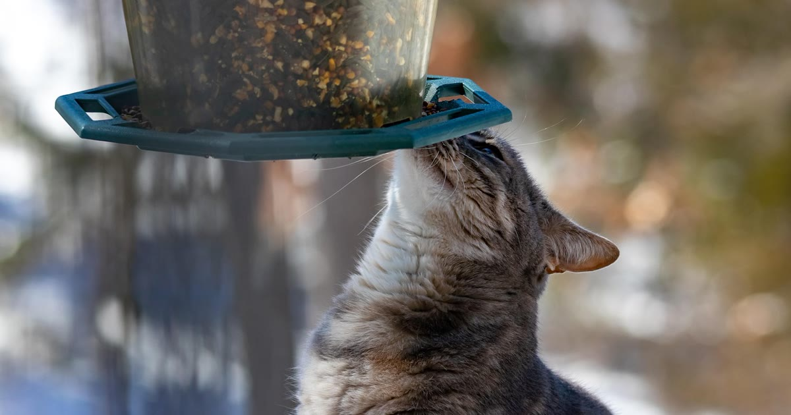
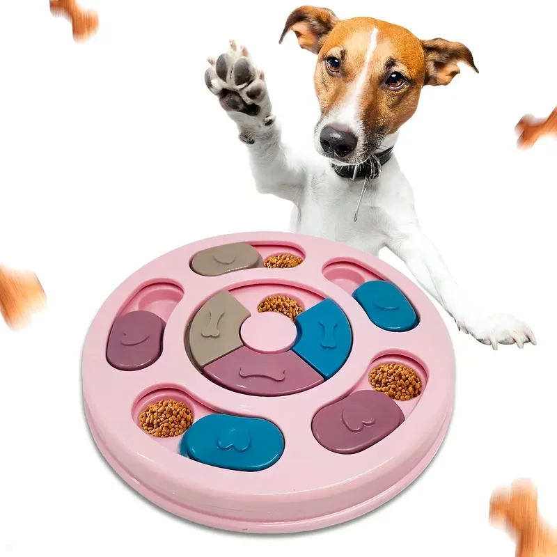
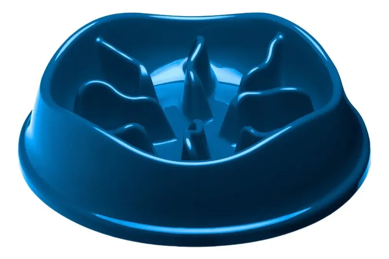
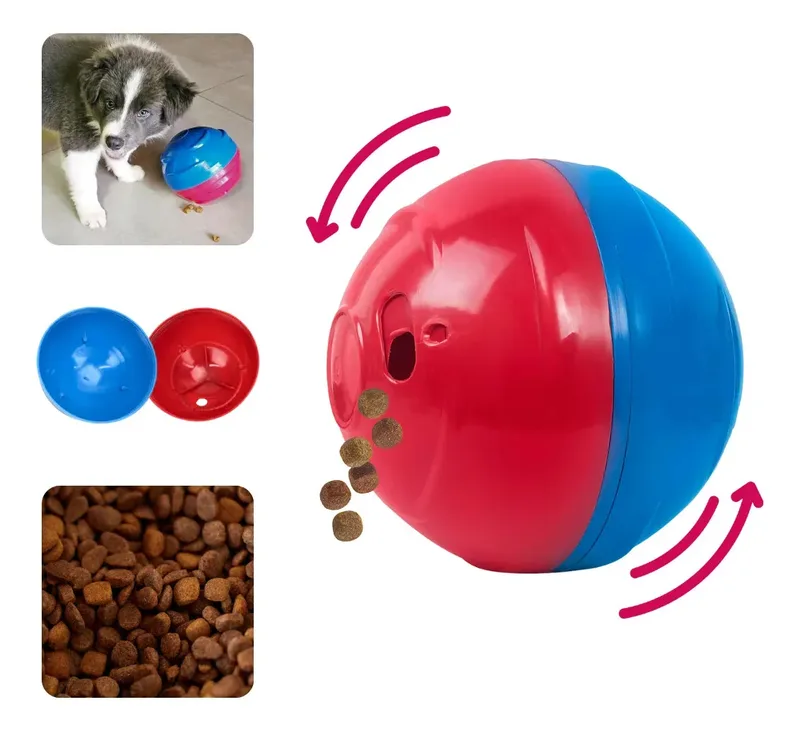
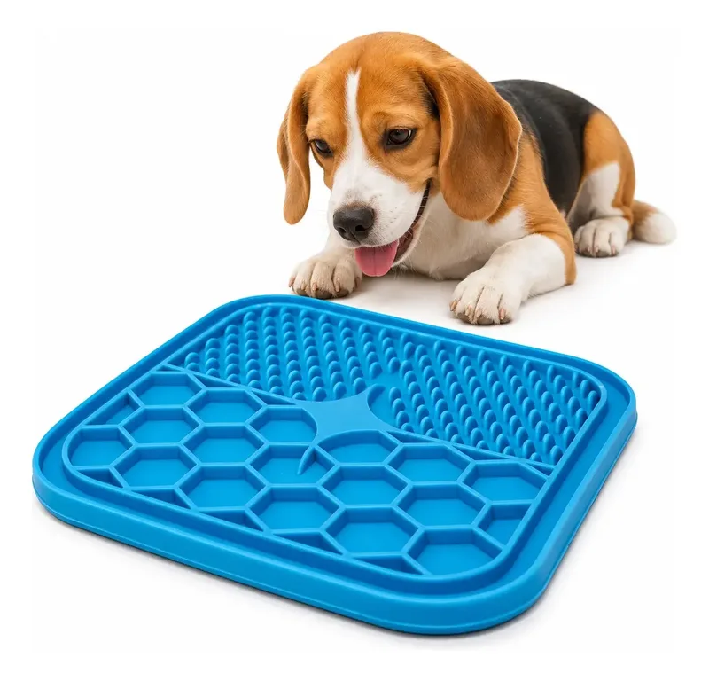
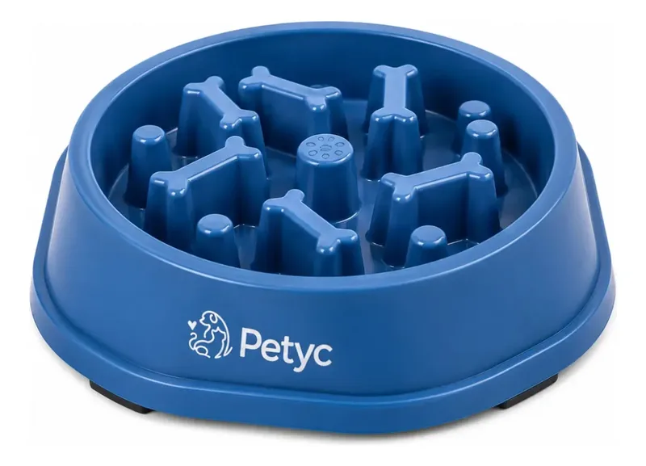
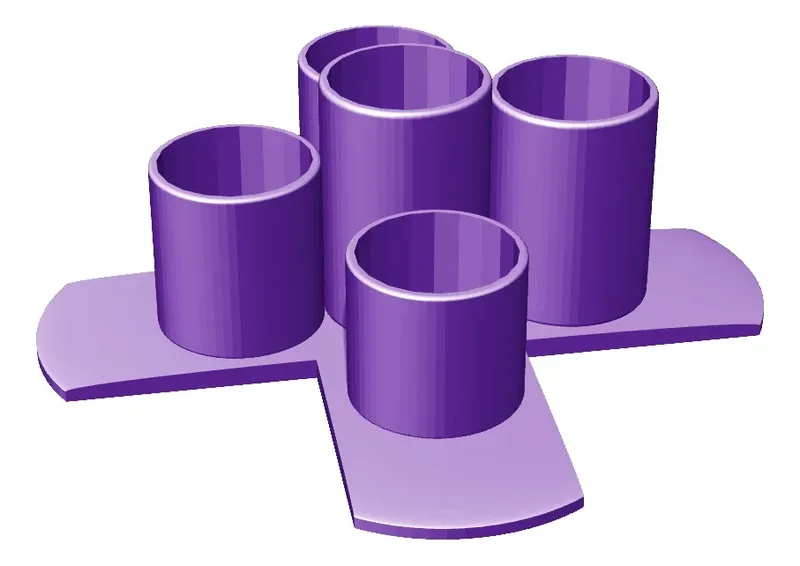

Melhor Comedouro Interativo para Gato: 6 Modelos Comparados em 2026

Este post contém links de afiliado. Podemos receber uma comissão em compras feitas através deles, sem custo adicional para você.
Resposta curta: para a maioria dos gatos, o melhor comedouro interativo entre os seis que comparamos é o quebra-cabeça redondo Esconde Petisco: nota 4,8 em 1.277 avaliações, R$ 32, e compradores contam que ele funciona como enriquecimento para gatos. Se o problema é o gato que come rápido demais, o comedouro lento Stark Pet (R$ 22,12) resolve com menos esforço. Para sachê e patê, o certo é o tapete lambedor (R$ 19,15).
Quer ver o preço agora? Quebra-cabeça Esconde Petisco no Mercado Livre.Link de afiliado — sem custo extra para você.
Ver preço no Mercado Livre →- Melhor no geral: quebra-cabeça Esconde Petisco (R$ 32, nota 4,8 em 1.277 avaliações)
- Para gato que come rápido demais: comedouro lento Stark Pet (R$ 22,12, vai à lava-louças)
- Mais barato e com movimento: bola dispensadora Pet Ball Mini (R$ 17,40, dificuldade ajustável)
- Para sachê, patê e petisco pastoso: tapete lambedor com ventosa (R$ 19,15)
- Para casa com cão e gato: comedouro lento labirinto PETYC (R$ 19,52, grande para gato pequeno)
- Novidade, ainda sem avaliações: torre de petiscos Ajeitô (R$ 44,90)
Comparativo: 6 Comedouros Interativos para Gato
Preços consultados no Mercado Livre em 27/11/2026 (semana de Black Friday), todos com envio a partir do Brasil. Eles mudam com frequência: confira no link antes de comprar.
| Modelo | Tipo | Comida | Preço | Nota | |
|---|---|---|---|---|---|
| Quebra-cabeça Esconde Petisco | Tabuleiro com tampinhas | Ração seca e petisco | R$ 32 | 4,8 (1.277) | Ver preço |
| Comedouro lento Stark Pet | Pote com relevo | Não informado | R$ 22,12 | 4,6 (36) | Ver preço |
| Bola Pet Ball Mini | Bola que solta grãos | Ração e petisco, até 90 g | R$ 17,40 | 4,8 (79) | Ver preço |
| Tapete lambedor | Tapete de silicone | Sachê, patê, pastoso | R$ 19,15 | 4,7 (2.226) | Ver preço |
| Labirinto PETYC | Pote com labirinto | Ração seca, 220 g | R$ 19,52 | 4,6 (969) | Ver preço |
| Torre Ajeitô | Copos em níveis | Petisco seco e ração | R$ 44,90 | Sem avaliações | Ver preço |
Por Que um Comedouro Interativo Faz Diferença para o Gato
Na natureza, o gato faz várias pequenas caçadas por dia; no pote comum, a comida aparece pronta e acaba em minutos. O comedouro interativo, também chamado de quebra-cabeça alimentar, devolve parte desse trabalho: o gato precisa procurar, empurrar ou lamber para comer.
A revisão "Food puzzles for cats: Feeding for physical and emotional wellbeing", publicada em 2016 no Journal of Feline Medicine and Surgery por pesquisadores ligados à Universidade da Califórnia em Davis, reuniu mais de 30 casos de clínicas em que o uso de quebra-cabeças de comida acompanhou perda de peso, menos agressividade e menos comportamentos de pedir atenção. Os autores recomendam começar por modelos fáceis e aumentar a dificuldade aos poucos. O blog Gatoca resume os mesmos benefícios em português.
Os 6 Comedouros Interativos, um a um
Como montamos a lista: não testamos os produtos. Escolhemos um modelo de cada tipo, priorizando nota, número de avaliações e vendas, e copiamos ficha técnica, preço e opiniões dos compradores dos anúncios do Mercado Livre em 27/11/2026. O que o anúncio não informa aparece como "não informado". Em produtos de catálogo, o vendedor em destaque pode mudar.
Brinquedo Comedouro Interativo Esconde Petisco (redondo)

Um tabuleiro redondo de 24 cm com várias aberturas: você coloca ração ou petisco nelas e cobre com as tampinhas, e o gato precisa deslizar ou levantar as peças para comer. É o modelo com a melhor combinação de nota e volume de avaliações da lista, e vários compradores falam de uso com gatos: "Produto muito útil no enriquecimento alimentar dos gatos".
| Preço | R$ 32 em 27/11/2026 |
|---|---|
| Material | Plástico |
| Medidas | 24 x 24 x 3 cm; 350 g |
| Capacidade | Não informada |
| Comida | Ração ou petisco nas aberturas, cobertas pelas tampinhas |
| Avaliações | 4,8 de 5 em 1.277 opiniões; +1.000 vendidos |
| Vendedor | Varia (página de catálogo); na consulta, EGSTORELOJA |
- Nota 4,8 com mais de mil avaliações
- Compradores relatam bom uso com gatos
- Formato baixo, com 3 cm de altura
- Fácil demais para gato esperto: "Em 30 segundos ela encontra todos os petiscos"
- Relatos de defeito: "várias frestas por onde a ração entra" e aberturas que emperram
- Sem nível de dificuldade informado
🧩 Quebra-cabeça Esconde Petisco: veja o preço de hoje.
Ver preço no Mercado LivreComedouro Elevado Lento Stark Pet

É um pote de 17 cm com relevo no fundo: a ração se espalha entre as divisórias e o gato precisa pegar os grãos aos poucos. Não exige aprendizado, então funciona desde o primeiro dia, inclusive com gato que não se interessa por quebra-cabeça. Um comprador conta: "Realmente funciona, ela está comendo bem mais devagar"; outro, que "ajudou muito no refluxo" do gato. Se o seu gato vomita com frequência, leve ao veterinário: comer devagar ajuda, mas não substitui o diagnóstico.
| Preço | R$ 22,12 em 27/11/2026 |
|---|---|
| Material | Polipropileno atóxico, livre de BPA |
| Medidas | Ficha: 6 x 17 x 4,5 cm; 17 cm de diâmetro |
| Limpeza | Compatível com lava-louças |
| Avaliações | 4,6 de 5 em 36 opiniões; +100 vendidos |
| Vendedor | Vendedor pequeno (+25 vendas), reputação não informada |
- Desacelera a refeição sem o gato precisar aprender nada
- Tamanho de pote de gato, ao contrário dos labirintos grandes
- Vai à lava-louças
- Pequeno: "Foto enganosa, vasilha é minúscula"
- "Material duro", segundo um comprador
- Poucas avaliações e vendedor com pouco histórico
🐱 Comedouro lento Stark Pet: veja o preço de hoje.
Ver preço no Mercado LivreBola Dispensadora Pet Ball Mini

Uma bola de 8 cm que você enche com até 90 g de ração ou petisco. Quando o gato empurra, os grãos caem pela abertura, então ele precisa se mexer para comer. A dificuldade é ajustável: o anúncio orienta a fechar aos poucos o painel da meia-bola para deixar a brincadeira mais desafiadora. É indicada para gatos e cães de até 5 kg, e um comprador elogia o "tamanho bom para gatos".
| Preço | R$ 17,40 (de R$ 21,99) em 27/11/2026 |
|---|---|
| Material | Polipropileno, atóxico e lavável |
| Medidas | 8 cm de diâmetro |
| Capacidade | Até 90 g de ração |
| Dificuldade | Ajustável pelo painel da meia-bola |
| Avaliações | 4,8 de 5 em 79 opiniões; +500 vendidos |
| Vendedor | Happy Pets, MercadoLíder Gold |
- O mais barato da lista
- Junta comida e exercício: o gato corre atrás da bola
- Dificuldade ajustável conforme o gato aprende
- "O plástico é perigoso se o pet for mto destrutivo", alerta um comprador
- Solta os grãos no chão, então pede piso fácil de limpar
- Poucas avaliações em comparação com o #1
⚽ Bola Pet Ball Mini: veja o preço de hoje.
Ver preço no Mercado LivreTapete Lambedor com Ventosa para Cães e Gatos

Os outros modelos da lista são para ração seca. Este é o caminho para quem dá sachê, patê ou petisco cremoso: você espalha a comida nas texturas do silicone, e o gato precisa lamber devagar para tirar tudo. As ventosas prendem o tapete no chão ou no azulejo. É o mais vendido da lista (+5 mil), e os compradores destacam "as ventosas são fortes" e "fácil de lavar".
| Preço | R$ 19,15 em 27/11/2026 |
|---|---|
| Material | Silicone atóxico, com ventosas |
| Medidas | 15 x 15 x 1,2 cm |
| Comida | Sachê, patê e petiscos pastosos |
| Avaliações | 4,7 de 5 em 2.226 opiniões; +5 mil vendidos |
| Vendedor | Varia (página de catálogo); na consulta, NPAC Variedades, loja oficial, MercadoLíder Platinum |
- O único da lista para comida úmida
- Mais de 2 mil avaliações, nota 4,7
- Ventosas firmes e limpeza fácil
- Pequeno: "menor que a palma da mão"
- "O cheiro do plástico é muito forte", segundo compradores
- A cor pode vir diferente da escolhida
👅 Tapete lambedor: veja o preço de hoje.
Ver preço no Mercado LivreComedouro Lento Labirinto PETYC 220 g

O comedouro lento mais avaliado que encontramos (969 opiniões, nota 4,6) e o mais barato entre os potes. O labirinto em forma de ossos faz o pet comer devagar, e o elogio mais repetido é "minha cachorra come mais devagar e sem desespero". O detalhe é esse: ele é pensado para cães. Com 23,5 cm, compradores dizem que "é gigante, não serve pra gatos". Por isso ficou em 5º: serve bem para casa com cão e gato, para gato grande ou para o tutor que quer um só modelo para os dois.
| Preço | R$ 19,52 em 27/11/2026 |
|---|---|
| Material | Plástico PP resistente |
| Medidas | 23,5 x 23,5 x 5 cm |
| Capacidade | 220 g |
| Comida | Mais indicado para ração seca; com alimento úmido, higienizar logo depois |
| Limpeza | Água e sabão neutro |
| Avaliações | 4,6 de 5 em 969 opiniões; +1.000 vendidos |
| Vendedor | Varia (página de catálogo); na consulta, PETZ STORE, MercadoLíder Gold |
- Muitas avaliações para um comedouro lento
- Barato
- Um modelo só para cão e gato
- Grande para a maioria dos gatos
- "Também não é antiderrapante" e, por ser leve, vira com pet impaciente
- O anúncio não diz se vai à lava-louças; orienta lavar com água e sabão neutro
🦴 Labirinto PETYC: veja o preço de hoje.
Ver preço no Mercado LivreTorre de Petiscos Ajeitô

Torres verticais de petisco são comuns lá fora, mas difíceis de achar no Brasil: as bem avaliadas no Mercado Livre são de bolinhas, sem comida, e a conhecida Catit Food Tree só aparece como compra internacional. A Ajeitô é a única torre de petiscos de verdade com envio nacional que encontramos: copos em alturas diferentes onde você esconde petiscos ou ração, e o gato tira com a pata. O problema é que o anúncio é novo, ainda sem avaliações nem vendas registradas.
| Preço | R$ 44,90 em 27/11/2026 |
|---|---|
| Material | PLA, impresso em 3D |
| Medidas | Ficha: 11 cm de altura x 22 cm de largura, 320 g. A descrição diz 19,1 x 19,1 x 8,2 cm |
| Comida | Petiscos secos e ração |
| Garantia | 90 dias do vendedor |
| Avaliações | Nenhuma ainda (anúncio novo) |
- Formato vertical, diferente dos outros da lista
- Garantia de 90 dias, a única informada entre os seis
- Envio a partir do Brasil, sem compra internacional
- Sem avaliações: ninguém confirmou ainda como funciona
- As medidas da ficha e da descrição não batem
- Peças impressas em 3D têm pequenas ranhuras entre as camadas, que pedem limpeza caprichada, e o PLA amolece com água muito quente
🗼 Torre de petiscos Ajeitô: veja o preço de hoje.
Ver preço no Mercado LivreQual Comedouro Interativo Escolher para o Seu Gato
| Se o seu gato… | Escolha | Por quê |
|---|---|---|
| Come rápido demais ou vomita logo depois de comer | Comedouro lento Stark Pet | Desacelera sem exigir que o gato aprenda nada. Se o vômito é frequente, procure o veterinário |
| Está entediado ou passa o dia sozinho | Quebra-cabeça Esconde Petisco | Faz o gato pensar para comer; bom para começar |
| Está acima do peso ou é sedentário | Bola Pet Ball Mini | Ele precisa correr atrás da bola para comer |
| Come sachê ou patê | Tapete lambedor | É o único formato da lista para comida úmida |
| Divide a casa com um cachorro | Labirinto PETYC | Tamanho que serve aos dois |
Como Começar sem Frustrar o Gato
- Use parte da ração do dia, não comida extra. Separe a porção que iria no pote comum e coloque no comedouro interativo, para não engordar o gato com petiscos a mais.
- Comece fácil. Na primeira semana, deixe as tampinhas abertas ou a bola no nível mais aberto. A revisão de 2016 recomenda subir a dificuldade aos poucos, conforme o gato acerta.
- Mantenha o pote comum por perto no começo. Gato que não consegue comer desiste do brinquedo; tire o pote quando ele já estiver usando o interativo sem dificuldade.
- Lave depois de cada uso com comida úmida e, com ração seca, pelo menos algumas vezes por semana. Restos nas frestas estragam.
- Supervisione no início, principalmente com bola e torre, para ver se o gato tenta morder ou arrancar peças.
Comedouro Interativo x Brinquedo Interativo
O brinquedo interativo, como uma bolinha que se mexe sozinha, estimula a perseguição física. O comedouro interativo estimula raciocínio e paciência, e ainda controla quanto e quão rápido o gato come. Os dois se complementam numa rotina de enriquecimento. Para o lado do movimento, veja o comparativo de bolinhas inteligentes e o guia de brinquedo automático para gato. Se o objetivo é controlar horário e porção, o caminho é o comedouro automático para gatos.
Perguntas Frequentes
Como funciona o comedouro interativo para gato?
Em vez de receber a ração pronta num pote, o gato precisa trabalhar para comer: levantar tampinhas, empurrar uma bola que solta grãos, tirar a comida de um labirinto ou lamber um tapete com texturas. Isso imita a caça e o forrageamento e faz a refeição durar mais.
Qual o melhor comedouro interativo para gato?
Entre os 6 que comparamos em 27/11/2026, o quebra-cabeça redondo Esconde Petisco tem a melhor combinação de nota e volume de avaliações (4,8 em 1.277) por R$ 32. Para gato que come rápido demais, o comedouro lento Stark Pet (R$ 22,12) é a opção mais direta; para sachê e patê, o tapete lambedor (R$ 19,15).
Comedouro interativo serve para ração úmida ou sachê?
Sim, mas o tipo certo é o tapete lambedor, em que o sachê ou patê é espalhado nas texturas. Quebra-cabeças, bolas e labirintos são feitos para ração seca e petisco; o anúncio do labirinto PETYC pede higienização imediata se for usado com alimento úmido.
Comedouro lento de cachorro serve para gato?
Depende do tamanho. Muitos comedouros vendidos para cães e gatos são grandes demais para o focinho do gato: compradores do labirinto PETYC, de 23,5 cm, reclamam que ele é grande para gatos. Para gato, prefira potes menores, como o Stark Pet, de 17 cm. Veja também a diferença entre comedouro de gato e de cachorro.
Quanto custa um comedouro interativo para gato?
Entre os modelos que comparamos, de R$ 17,40 (bola dispensadora Pet Ball Mini) a R$ 44,90 (torre de petiscos Ajeitô), em preços consultados no Mercado Livre em 27/11/2026.
Conclusão
Para a maioria dos gatos, comece pelo quebra-cabeça Esconde Petisco: é barato, bem avaliado e mostra rápido se o seu gato gosta de trabalhar pela comida. Se o problema é velocidade, o Stark Pet resolve sem curva de aprendizado; se ele come sachê, o tapete lambedor. E, como o gato acaba decifrando qualquer quebra-cabeça, alternar dois modelos ao longo da semana mantém o interesse por mais tempo.
Mais dúvidas sobre brinquedo interativo? Veja brinquedo interativo para gato: perguntas frequentes e como escolher brinquedo interativo para gato entediado. Para os outros tipos de comedouro, veja o ranking de comedouro automático para pet; se tem cachorro, o guia de comedouro automático para cachorro.
Veja nossa política editorial e como verificamos as fontes citadas neste artigo.
🐾 Quebra-cabeça Esconde Petisco: o melhor no geral para começar.
Ver no Mercado LivreLink de afiliado: podemos receber uma comissão por compras feitas através deste link, sem custo adicional para você.